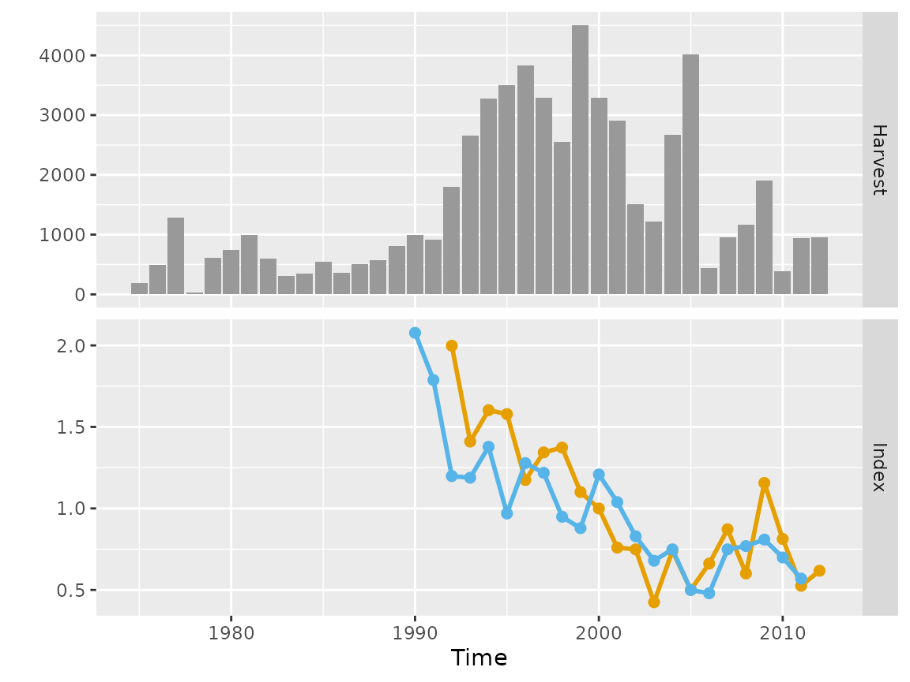
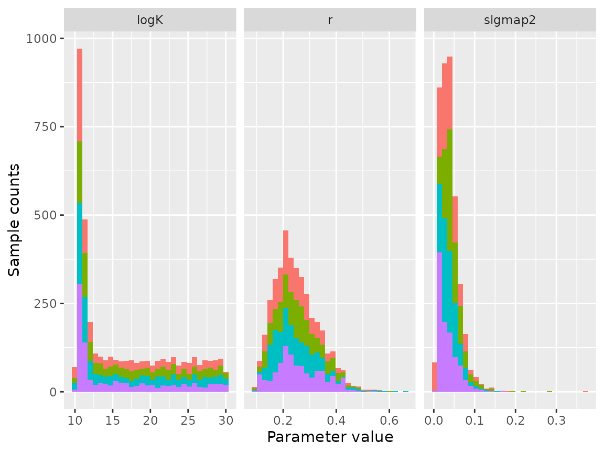
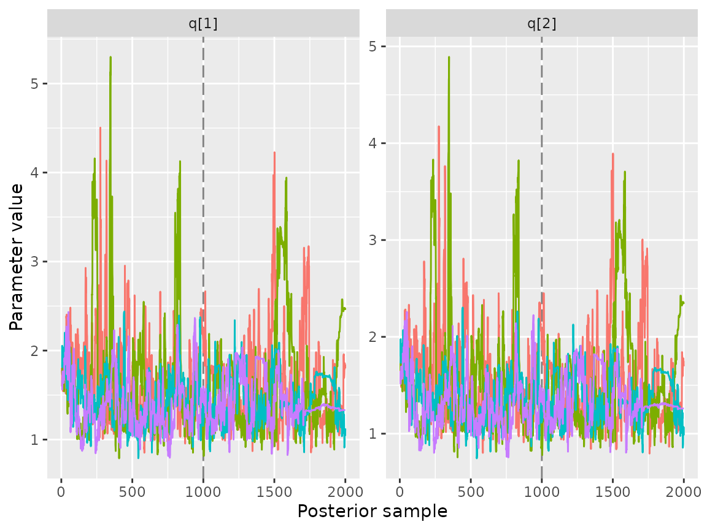

A new (non-default) model application of `bdm`
Charles T T Edwards
15-Sep-2026
Source:vignettes/bdm-newmodel.Rmd
bdm-newmodel.RmdExample applications of non-default (i.e. user-specified) models in
the bdm R-package are given here, based on data from
fisheries in New Zealand.
Chatham Rise Hake
The model is fitted to data from the chatham rise hake fishery in New
Zealand, which consists of catches, a commerical abundance index and a
survey index. The data are used to initialise an empirical data object
(bdmData) that, by default, renormalises the indices to a
geometric mean of one. See ?bdmData for details.
data(haknz)
dat <- bdmData(harvest = haknz$landings,index = cbind(haknz$survey, haknz$cpue), time = haknz$year, renormalise = TRUE)
plot(dat)
Chatham rise hake data
The revised model could be coded with the following changes relative to the default model:
new_model <- "
...
parameters {
real<lower=3,upper=30> logK;
real<lower=0,upper=2> r;
array[T] real<lower=0> x;
real<lower=0> sigmap2;
}
...
model {
// prior densities for
// estimated parameters
// ********************
logK ~ uniform(3.0,30.0);
r ~ lognormal(-1.0,0.20);
sigmap2 ~ inv_gamma(0.001,0.001);
...
}
...
"This new formulation includes a revision of our assumptions regarding
the process error, allowing the variance to be estimated. We can update
the model code using a list argument supplied to the
updatePrior function. It is then necessary to compile the
model:
mdl <- bdm(model_code = new_model)
mdl <- updatePrior(mdl, prior = list(par = 'r', meanlog = -0.91, sdlog = 0.40))
mdl <- compiler(mdl)If a new model is loaded into the bdm object, and if the
estimated parameters are not the same as the default, then the
initialisation function within sampler() will not work.
This function provides sensible values for the MCMC algorithm. If the
new model were to be run without an initialisation function then initial
parameter values will be generated randomly by rstan.
To construct a new inititialisation function we can use some of the auxiliary functions that are implemented for the default model:
init.r <- getr(mdl)[['E[r]']]
init.logK <- getlogK(dat, r = init.r, interval = c(1, 100))
init.x <- getx(dat, r = init.r, logK = init.logK)These values can be used to create the initialisation function that must return a list of initial values:
init.func <- function() list(r = init.r, logK = init.logK, x = init.x, sigmap2 = 0.0025)
mdl <- sampler(mdl, dat, init = init.func)
Posterior histogram plots for chatham rise hake fit using the new non-default model
We note that the model is unable to resolve a value for
logK, and estimates an excessively high value for
sigmap2. It would therefore be considered to have failed as
an assessment. This can also be seen from the catchability traces, which
behave poorly:
traceplot(mdl,par = 'q')
Catchability trace plots plots for chatham rise hake fit using the new non-default model